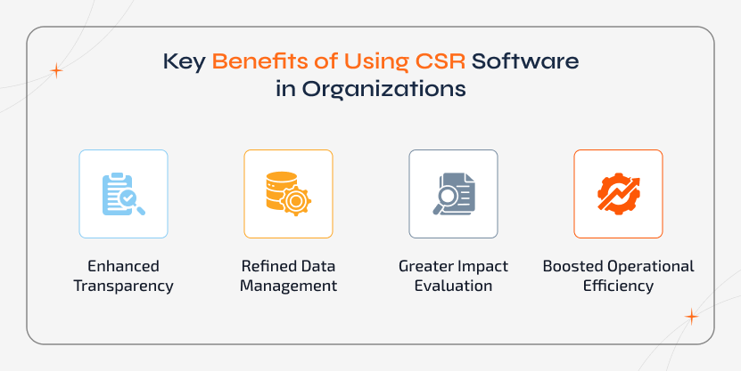
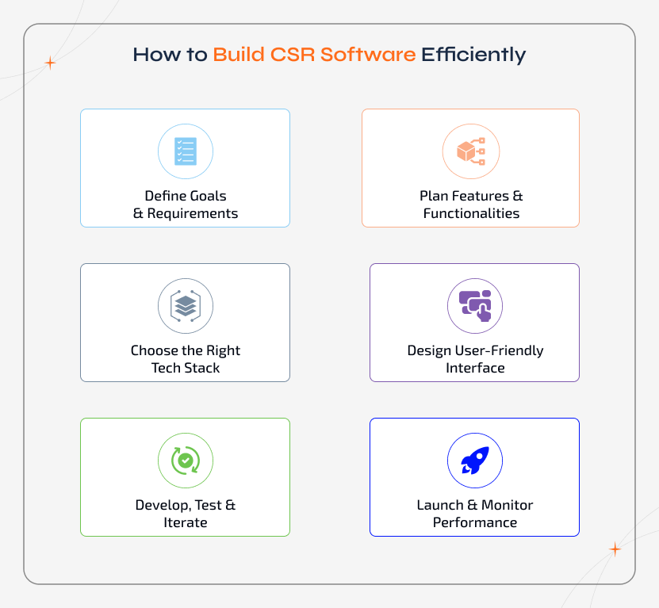
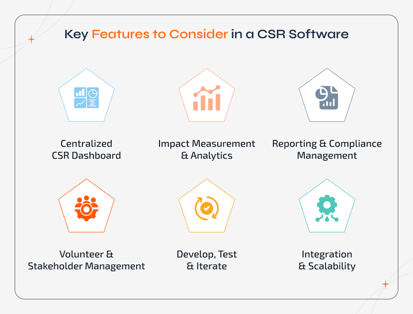

As your business evolves, the stakeholders will expect you to take full responsibility for the social, environmental, and ethical impact. This is where Corporate Social Responsibility (CSR) sets its foot. It is a practice of integrating social welfare, ethical governance, and environmental sustainability into business operations carried out through measurable initiatives. In this informative blog, you will learn how CSR actually works in real-world scenarios and how the CSR software enables organizations to plan programs, manage funds, and report outcomes with higher transparency and accountability.
What is Corporate Social Responsibility?
Corporate Social Responsibility (CSR) is nothing but how businesses take the responsibility for their impact on society and the people they work with. Beyond focusing only on profits, CSR do encourage firms to operate responsibly by embracing similar communities and following ethical standards.
Most importantly, these efforts are not just a one-time activity, but a part of long-term business planning and decision-making. With reliable CSR practices, organizations can stay accountable, build trust with stakeholders, and contribute positively to social and economic development while evolving sustainably.
On the other hand, CSR takes different forms, including environmental responsibility, ethical responsibility, philanthropic responsibility, and economic responsibility. Each ones plays a vital role in how businesses interact with society and the environment. Altogether, these approaches help organizations in minimizing environmental harm and creating long-term positive impact beyond profits.
What is CSR Software and How Does it Work?
CSR software is a purpose-built tool that actually helps companies to organize their social responsibility efforts without depending on scattered records or spreadsheets. This specific software allows teams to plan initiatives, allocate funds, and monitor progress from a single place. When the CSR initiatives grow, the software captures real-time data, tracks milestones and records outcomes against defined objectives.
In the meantime, a CSR management software also simplifies documentation and reporting by automatically structuring the data in a way that supports audits and disclosures.
Key Benefits of Using CSR Software in Organizations
Sometimes, businesses find themselves in a dilemma whether to choose CSR software or not. If you’re one among them, then here are the key benefits of investing in CSR software that helps enterprises to manage, track, and enhance their corporate social responsibility initiatives efficiently.

1. Enhanced Transparency & Accountability
Having a CSR
monitoring software helps you track every single initiative, donation and impact
metric from one place. This approach makes it much easier to display to
stakeholders, partners and regulators exactly what you’re doing and why it
actually matters.
2. Refined Data Management & Reporting
Handling the CSR
data manually will be hard, and potential errors might occur at times. As a
remedy, the CSR software automates data collection and organizes everything in a
structured way. Parallely, you can also generate reports much quicker, minimize
mistakes, and stay ready for audits and compliance requirements.
3. Greater Impact Evaluation
By having the right
software tool on your side, you can easily measure the actual outcomes of your
CSR programs instead of just guessing it. This also helps in tracking KPIs,
including social impact, environmental savings, and community engagement. As a
result, you can clearly see what’s working and what’s not.
4. Boosted Operational Efficiency
CSR software significantly cuts repetitive tasks, including
spreadsheets, emails, and manual follow-ups. With this, now teams can
collaborate better, manage projects smoothly, and focus more on strategy instead
of admin work. This ensures lower software development costs and
more impact with the same resources.
Impact Insight! Brand Credibility
When the CSR efforts are perfectly managed and clearly communicated, your brand will look more credible and responsible. This software helps you share accurate stories backed by data, strengthening relationships with customers, investors, and employees who actually care about purpose-driven businesses.
How to Build CSR Software Efficiently
Building a CSR software isn’t just about coding a tool. It’s actually about creating a CSR management platform that helps organizations to manage, track, and improve corporate social responsibility efforts. Here’s the step-by-step procedure involved in building a CSR software.

Step 1: Define Goals & Requirements
Start the process
by understanding what the
software actually needs to achieve (track donations, manage volunteer programs,
or measure environmental
impact).
Step 2: Plan Features & Functionalities
Further, list
the core features that your
software must have. This includes volunteer management, donation and fund
tracking, impact tracking
dashboards, and campaign management.
Step 3: Choose the Right Tech Stack
Select the
technology or technologies that
match with your software’s complexity and scalability needs. Cloud storage, web
framework, and API
integrations are the major decisions here.
Step 4: Design User-Friendly Interface
The CSR software
that you’re developing
should be intuitive. Simple dashboards, clear navigation, and accessible reports
will make it easier for
your internal teams to adopt the tool quickly.
Step 5: Develop, Test & Iterate
Further, start with
coding and follow by testing.
During this, functional, usability, and security testing are mandatory. Collect
feedback from potential
users and iterate to improve the peformnace, features, and overall experience.
Step 6: Launch & Monitor Performance
Once the product goes
live, track the usage, system performance, and user feedback. Regular updates
based on real-world use and
make sure that the software remains effective and aligns with CSR goals.
Strategies to Implement CSR Software Across the Organizations?
Developing and deploying the CSR software doesn’t mean you’ve reached the end goal. Beyond that, you have to successfully implement the CSR software across your organizations. The strategies mentioned below will help in successful CSR implementation and ensure smooth onboarding.
1. Host CSR Software Orientation Sessions
Kick things
off with live orientation
sessions to explain what CSR software actually is, why it’s being introduced,
and how it benefits both the
employees and the company. This builds awareness among the employees and
minimizes resistance from the
start.
2. Conduct Hands-On Training Workshops
Don’t forget to
organize interactive
workshops, so that teams can actually use the CSR software. This lets the
employees create campaigns, log
activities, and generate reports during this session. In the meantime, practical
exposure do increase
confidence and adoption.
3. Appoint CSR Experts
Select internal CSR experts who
can understand the software
well. They actually act as a go-to support for others, encourage the
participation, and help resolve generic
issues without relying on any external team.
4. Run Pilot Programs
Start with a
small group of departments
to test the CSR software. Ensure to use the feedback from the pilot to refine
the workflows and address
challenges before rolling out across the entire organizaiton.
Expert Take! Progress Spotlight
Use your CSR software to regularly share updates, impact reports, and success stories. Highlighting participation keeps employees engaged and reinforces the real value of the platform.
Key Features to Consider in a CSR Software
Choosing the right CSR software means focusing on features that make impact tracking, management, and reporting simple and yet effective. Here are some of the key features that every CSR platform must have.

Centralized CSR Dashboard
A centralized dashboard gives
you a clear view of all the
CSR activities under a single unit. It helps to track ongoing projects, budgets,
timelines and do impact
metrics without juggling between multiple tools.
Impact Measurement & Analytics
A reliable CSR software
must offer tools to measure
social, environmental, and economic impact. Also, built-in analytics helps
organization to evaluate
performance, track KPIs, and make data-driven decisions to improve the CSR
outcomes.
Reporting & Compliance Management
A good CSR software
must support automated
reporting features to simplify compliance with CSR regulations and standards.
Additionally, it must generate
accurate reports that are easy to share with stakeholders, auditors, and
regulatory bodies.
Volunteer & Stakeholder Management
Managing employee
volunteers, partners, and
beneficiaries is easier with a dedicated management tools. This feature helps to
track participation,
engagement levels, and contributions across the CSR initiatives.
Integration & Scalability
The
chosen Social Responsibility
software should integrate smoothly with existing systems, including HR, finance,
and ERP platforms. At the
same time, scalability ensures that software can grow with your organization and
support expanding CSR
programs over time.
CSR Software vs CSR Project Management: Understanding the Key Differences
Although CSR software and CSR project management are often used in day-to-day business terms, they actually serve different purposes within the organization. Understanding the differences will help businesses to choose the right approach for managing the CSR initiatives.
CSR software is a comprehensive platform, which is specifically designed to manage organization’s entire CSR framework. It primarily focuses on compliance reporting, stakeholder transparency, and long-term data management across multiple initiatives.
CSR project management, on the other hand, is limited to planning and executing individual CSR initiatives. It helps in managing tasks, timelines, resources and budgets for specific projects. However, it lacks broader capabilities like impact analysis and standardized reporting.
Why Choose Saprkout for CSR Software Development?
One of the flexible and yet reliable ways to develop and implement a CSR software is partnering up with an experienced CSR company. Choosing the right development partner will help businesses in creating digital solutions that enable transparency and long-term sustainability.
If you’re looking for a dedicated software development company, then you can opt for Sparkout. It stands out as one of the outstanding CSR software companies that delivers tailored CSR software aligned with your CSR objectives and regulatory standards. With a keen focus on strategic planning, secure architecture, and cost effectiveness, Sparkout helps organizations in building and managing CSR platforms that support growth and meaningful social outcomes.
Topic You Might Like!
Top recommendations
If you’re planning to go beyond off-the-shelf tools, learn more about customer software development.